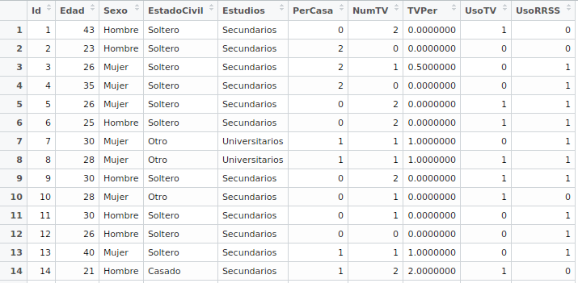
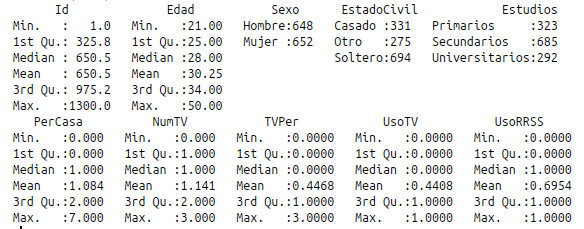
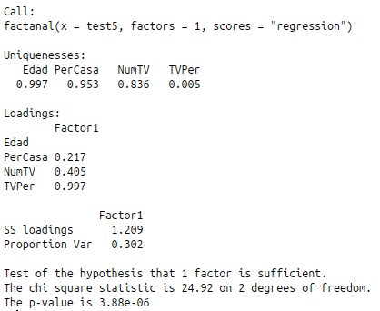

Tratamiento Inteligente de Datos
Máster Universitario en Ingeniería Informática
Germán Martínez Maldonado

Presentación de datos
Dataset
Resumen
Análisis factorial
La alta singularidad en las variables indica que las variables tienen comportamientos inesperados.
Chi-cuadrado y p-valor indican como de bien se ajusta el modelo a los datos, están poniendo a prueba la hipótesis de que el modelo se ajusta a los datos a la perfección; dado un p-valor tan pequeño, rechazamos la hipótesis.
Agrupamiento
- Reunir los datos en grupos de elementos que presenten cierto grado de homogeneidad
- Clases: uso de televisión (sí/no) y uso de redes sociales (sí/no)
Procedimiento
- Muestra de 150 datos
- Transformación de variables:
- Las variables binarias no se transforman
- Las variables categóricas se convierten en binarias
- Los valores de las variables cuantitativas serán normalizados (media aritmética/desviación estándar)
- Calcular distancia ponderada de distancia en las variables numéricos y distancia en las variables binarias
- Las variables binarias no se transforman
- Las variables categóricas se convierten en binarias
- Los valores de las variables cuantitativas serán normalizados (media aritmética/desviación estándar)
Agrupación jerárquica
Cada dato comienza en su propio grupo y se va ascendiendo

K-medias
Definimos el número de grupos y de forma iterativa los datos se van agrupando en función de su cercanía a la media del grupo.
K-medoides
Definimos el número de grupos y de forma iterativa los datos se van agrupando en función de su cercanía del medoide del grupo.
Clasificación
- Asociar datos a grupo predefinidos
- Árboles de clasificación: encontrar una estructura jerárquica para explicar como unas entradas concretas pueden producir unas salidas determinadas.
- Clases: uso de televisión (sí/no) y uso de redes sociales (sí/no)
Procedimiento
- Muestra de 150 datos
- Transformación de variables:
- Discretizar las variables binarias a usar
- Definir el modelo
- Crear árbol
- Test de los resultados
- Analizar los resultados
- Discretizar las variables binarias a usar
- Definir el modelo
- Crear árbol
- Test de los resultados
- Analizar los resultados
Librería "tree"
Librería "party"

Librería "rpart"

Clasificación Naive Bayes
|
|
Uso TV | Uso RRSS | ||||
|---|---|---|---|---|---|---|
| No usa TV | Usa TV | No usa RRSS | Usa RRSS | |||
| No usa TV | 433 | 144 | No usa RRSS | 161 | 164 | |
| Usa TV | 76 | 244 | Usa RRSS | 116 | 456 | |
Clasificación K-vecinos más cercanos
|
|
Uso TV | Uso RRSS | ||||
|---|---|---|---|---|---|---|
| No usa TV | Usa TV | No usa RRSS | Usa RRSS | |||
| No usa TV | 183 | 46 | No usa RRSS | 89 | 44 | |
| Usa TV | 47 | 137 | Usa RRSS | 39 | 241 | |
Random forest
|
|
Uso TV | Uso RRSS | ||||
|---|---|---|---|---|---|---|
| No usa TV | Usa TV | No usa RRSS | Usa RRSS | |||
| No usa TV | 434 | 105 | No usa RRSS | 165 | 36 | |
| Usa TV | 63 | 285 | Usa RRSS | 103 | 583 | |
Comparación
| tree | party | rpart | Naive Bayes | KNN | Random Forest | |
|---|---|---|---|---|---|---|
| Precisión total | 82.382 | 82.382 | 82.382 | 76.427 | 77.482 | 83.535 |
| Valor-F total | 0.8201 | 0.820 | 0.820 | 0.758 | 0.772 | 0.813 |
Regresión logística
Predecir variables categóricas en función de las variables independientes.
|
|
Uso TV | Uso RRSS | ||||
|---|---|---|---|---|---|---|
| No usa TV | Usa TV | No usa RRSS | Usa RRSS | |||
| No usa TV | 437 | 123 | No usa RRSS | 100 | 38 | |
| Usa TV | 89 | 284 | Usa RRSS | 186 | 609 | |
Asociación